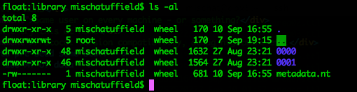
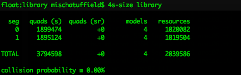
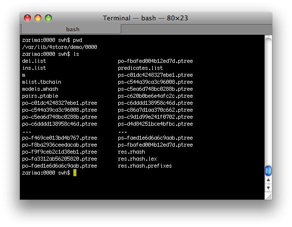
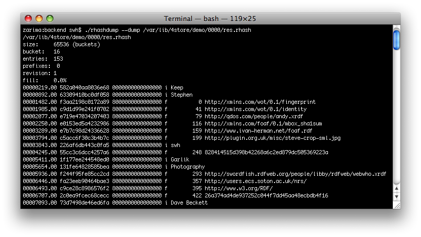
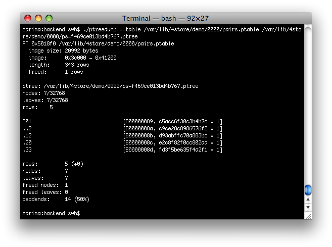

4store Tutorial
Garlik Ltd.
- Steve Harris
- Nick Lamb
- Mischa Tuffield
- Luke Wilson-Mawer
More info at 4store.org and
#4store on irc.freenode.net
Introduction
In this tutorial we plan to cover:
- Install and setup of 4store
- Cluster configuration
- Performance tips and tricks
and maybe
- Diagnostics
Please interrupt if you have questions
Setup - Requirements
- 64-bit for production
- 4store uses memory mapping, limited address space
- but 10s of millions of triples without
- Most tested on x86-64 with CentOS 5
- RAM > CPU > disk
- but remember to allow for raw RDF data
- ./configure
- checks source code dependencies, not autoconf
Setup - installation
- source install
- (Hopefully binary packages are similar but easier)
- /usr/local/lib(64) + ldconfig
- /var/lib/4store
- Use a separate 4store user ?
- Not essential, avoids permissions problems, alternative is chmod 777
- 4s-httpd / 4s-query / 4s-import doesn't need access
Setup - backend settings
4s-backend-setup ...
- 4s-backend-setup
- --node 0
- --cluster 1
- --segments 16
- --mirror
Security
- 4s-backend-setup --password sesame
- Shared secret
- Link is not encrypted
Clusters - Principles
- Fast local network
- Low-latency, 100Mbit ok, Gbit better
- Same LAN for DNS-SD
- Could go beyond LAN, but untested, performance would suffer on slow links
- High-bandwidth operations are unicast
- So you don't need a smart (expensive) switch that groks multicast
Clusters - Tools
- SSH based - /etc/4s-cluster
- operations initiated from 'master'
- Public key infrastructure
- manual (with Agent forwarding)
- shosts
- pre-seed keys to master or use DNSSEC
Clusters - Tools
- 4s-cluster-create
- 4s-cluster-start
- 4s-cluster-stop
- 4s-cluster-destroy
- 4s-cluster-info
- 4s-cluster-copy (must be quiescent)
Clusters - Practice
- Many identical installs so e.g. Kickstart
- Building a reliable script is tricky, but once it works it is pretty reliable
- Try to avoid doing unattended installs until you're comfortable
Decisions
- DHCP? LLv4? (or IPv6)
- DNS? mDNS? (want nss-mdns)
- NFS? rsync? package updates
- NIS?
Clusters - Demo
- LLv4 + mDNS
Don't try this at home !
Filesystem Layout
- 4store places its data in : /var/lib/4store/
- A directory is created for example KB present : /var/lib/4store/[KBNAME]/

Metadata turtle file (1)
- Can be found /var/lib/4store/library/metadata.nt
-
@base <file:///var/lib/4store/library/metadata.nt> .
@prefix rdf: <http://www.w3.org/1999/02/22-rdf-syntax-ns#> .
<>
<http://4store.org/metadata#bnode> "1" ;
<http://4store.org/metadata#hash> "none" ;
<http://4store.org/metadata#hash_function> "UMAC" ;
<http://4store.org/metadata#kb_name> "library" ;
<http://4store.org/metadata#model_data> "true" ;
<http://4store.org/metadata#model_files> "false" ;
<http://4store.org/metadata#num_segments> "2" ;
<http://4store.org/metadata#salt> "0" ;
<http://4store.org/metadata#segment_p> "0", "1" ;
<http://4store.org/metadata#store_type> "native" ;
<http://4store.org/metadata#version> "11" .
Backup
- Single Node Instance:
- 4s-file-backup [KB_NAME] > ~/something.tar.gz
- Clustered Instance:
- 4s-cluster-file-backup
- Creates a tar ball on a machine named backup (/etc/host) or .sshconfig which basically tar balls all of them to ~/4store/
- 4store/$1.$node.$datestamp.tar.gz
- Can cause problems if there are imports ongoing
- Perl script which goes through, and writes out triples to one file per graph (this is safe with lots of importing going on -- a la qdos)
- You can hand mangle directories in /var/lib/4store
- Could be done in a similar manner using rsync, should be very similar to 4s-cluster-file-backup script
Restoring
- Perl file method restore, very simple, parse file and reimport
- HTTP Daemon
- 4s-import (faster)
- Or grab and put the tar balls created back into /var/lib/4store/
Logging
- /var/log/messages (redhat flavoured linux), /var/log/system.log (mac), or whatever your syslogger is called
- Give us log file output if possible, when creating a bug report
- Query Logs:
- /var/log/4store/query-[KB_NAME].log
- -D stops the httpd from daemonising, and it runs to the terminal
Percentage of free disk space
- Environment Variable : FS_DISK_LIMIT
- Read by 4s-backend when when started
- This allows sysadmin to dictate behaviour of 4store when machine starts running out of free disk space
Importing Data
- RDF parsed using Raptor
- e.g. RDF/XML, Turtle, N-triples, TriG
- performance varies by RDF format
- file size limit (2G) for Turtle family
Import Methods
- "offline" command line tools
- "online" HTTP
Operations:
- insert / replace whole graph
- add to existing graph
Import - command line
4s-import
- parser is local
- can import from a URI by default
- reassuring progress indication with -v
BUT...
- exclusive lock of KB
Import - HTTP
PUT / POST
- somewhat standard
- serialised, but no lock
- parsed by 4s-httpd
- poorer RDF error reporting
- safe default choice
Import - HTTP
- PUT uri (see HTTP spec)
- some HTTP libraries don't support this, so ...
- PUT /data/uri-encode-graph
- DELETE (urls as for PUT)
- POST /data/ (add to existing graph)
- POST /update/ (SPARUL : W3C member submission)
Import - SPARUL subset
- DROP and CLEAR (treated the same)
- LOAD
- LOAD INTO
Import - Client libraries
No need to roll your own
- Links from the 4store.org wiki
- PHP, Python, and Ruby
- also do SPARQL queries
Hash collisions
- Unique Resources 4billion ~ before collision becomes likely
- Separate value spaces for both URIs and Literals
- 4store likes storing bnodes, it can handle far more
- This determines the upper limit of data which can be imported

RAM consumption, out of RAM effects.
- maxi-density ~64bytes per quad
- du -hs /var/lib/4store/[KB_NAME] to get how much RAM is being used
- This is the worst case, as indexes are not always all paged in
- When running out of RAM, queries become very slow, but import should be OK
- If you are using 32bit and you go over 2gigs of indexes per segment it then goes bang
Quantity of predicates.
- For example, dbpedia 1.0 had loads of predicates, which becomes slow
- dbpedia 3.1 has 49122 properties, but it is stressed that that is a lot for an ontology
- This can cause problems with using operations that have to traverse all predicates or complex operations focused around predicates
- Covered in detail in the Query Section
- After 300 predicates steady drop off in performance, not problem unless you use lots of predicates in queries
Querying
- Two ways to issue queries:
- Using the 4s-query command line tool
- Over HTTP using SPARQL protocol
- SPARQL is usually more efficient
- Can connect to 4s-query as a pipeline (-P)
- More efficient for lots of small queries
- Non-standard
Result formats
- There are a handful of result formats
- Can be chosen with 4s-query -f, Accept: header, or output CGI argument
- In decreasing order of efficiency:
- Tab Separated (“text”, text/tab-separated-values)
- JSON (“json”, application/sparql-results+json)
- SPARQL XML (default, “sparql”, application/sparql-results+xml)
Result formats — TSV
- Non-standard
- Efficient to generate
- Quick to parse
?x ?y
"foo" "12"^^<http://www.w3.org/2000/10/XMLSchema#integer>
"bar"@EN <http://4store.org/>
Result formats — JSON
{"head":{"vars":["x","y"]},
"results": {
"bindings":[
{"x":{"type":"literal","value":"foo"},
"y":{"type":"literal","value":"12",
"datatype":"http://www.w3.org/2001/XMLSchema#integer"}},
{"x":{"type":"literal","value":"bar","xml:lang":"EN"},
"y":{"type":"uri","value":"http://4store.org/"}}
]
}
}
Result formats — SPARQL
- Standard
- Fairly efficient to generate
- Can be expensive to parse
<?xml version="1.0"?>
<sparql xmlns="http://www.w3.org/2005/sparql-results#">
<head>
<variable name="x"/>
<variable name="y"/>
</head>
<results>
<result>
<binding name="x"><literal>foo</literal></binding>
<binding name="y"><literal datatype="http://www.w3.org/2001/XMLSchema#integer">12</literal></binding>
</result>
<result>
<binding name="x"><literal xml:lang="EN">bar</literal></binding>
<binding name="y"><uri>http://4store.org/</uri></binding>
</result>
</results>
</sparql>
Query Quirks
A handful of things that 4store does, which you might not be expecting
Default graph (1)
- Normally 4store does not have the behaviour as defined in the spec.
- When dealing with lots of data with complex provenance, spec. behaviour is awkward
- If you load a.rdf, b.rdf, and c.rdf:
Soft Limits
- When dealing with very large datasets, it's common to encounter queries that return millions of rows
- Because HTTP is generally used as a transport it's difficult to stop the query processors, even if you realise in time (ctrl-C won't cut it!)
- The soft limit constrains the amount of effort the query engine will put into answering any query, it limits the size of the working-set of the query.
- Use &soft-limit=N to control it, it defaults to about 1000
- Queries that have been constrained by the soft limit will be indicated with a warning in the results [demo]
Public SPARQL Endpoints
- One of the design goals of 4store was to allow this, but we've never
done it in anger
- Can't promise that it's safe to do
- Make sure you set a soft-limit explicitly in the HTTP call
- Make sure you set restricted
- Good luck, and tell us how you get on
Known Bugs
- Bottom-up queries aren't executed correctly
- In practice you'll probably never see this
- Certain combinations of LIMIT, FILTER, OPTIONAL and ORDER BY can result in incorrect ordering
Optimising queries
Some experiences of how to make 4store queries run quickly, and how to diagnose performance problems if you find them
We will also cover some unusual or unexpected optimisations
FILTERs slow, patterns fast
- As a rule of thumb, FILTER expressions are not optimised
SELECT * WHERE { ?x :p ?val . FILTER(?val > 1 && ?val < 4) }
is very slow, but
SELECT * WHERE { { ?x :p 2 } UNION { ?x :p 3 } }
will be very quick
This might come as a surprise to people familiar with relational databases
FILTER disjunctions
- An exception to the “FILTERs slow” rule of thumb
- FILTERs of the form
?x = K || ?x = L || ?x = M || …
can often be optimised, and are usually faster than the equivalent UNION, e.g.:
SELECT ?name
WHERE {
<s> ?p ?name .
FILTER(?p = foaf:name || ?p = foaf:nick)
}
is typically faster than
SELECT ?name
WHERE {
{ <s> foaf:name ?name . } UNION { <s> foaf:nick ?name . }
}
Constant Object Triple Groups
- In systems with several segments, or clustered systems there's a big performance gain for this type of query:
SELECT ?x WHERE {
?x :givenName "John" ;
:familyName "Smith" ;
:yearOfBirth 1973 .
}
- Might expect it to be slow, but can be parallelised very efficiently [demo]
- Also works for cases like
SELECT ?x WHERE {
<person> :givenName ?given ;
:familyName ?family .
?x :givenName ?given ;
:familyName ?family ;
:yearOfBirth 1973 .
as long as there's only one binding each for ?family and ?given.
CONSTRUCT and Linked Data services
The End
Thanks for your attention, we hope you now have a clearer idea of how 4store works.
We also have a few more slides on more complex internal issues and diagnosis, if you've not had enough already.
Really Advanced Stuff
Things that are pretty complex, and we might have time to touch on
EXPLAIN syntax
- EXPLAIN only works from 4s-query (a bug/omission) and you need LAQRS support compiled into Rasqal
- Syntax:
PREFIX …
EXPLAIN SELECT … WHERE …
- Example:
$ 4s-query loadtest
'EXPLAIN SELECT ?a ?b WHERE { <local:a> ?y ?z . ?a ?b ?z }'
execute: triple(uri<local:a>, variable(y), variable(z)) LIMIT 998
mmmms (_,_[e7c9e444a4b5e52e],_,?) -> 2
2 bindings (2)
execute: triple(variable(a), variable(b), variable(z)) LIMIT 998
NNNNo (_,?,?,?[67ea9ed287a80d87 5b8e6e8d1ed39a5c]) -> 2
2 bindings (6)
Index Files

- There are a number of different indexes in the 4store segment directory
- rhash*, ptrees, an mhash, and a tbchain
RHash Diagnostics

PTree Diagnostics
